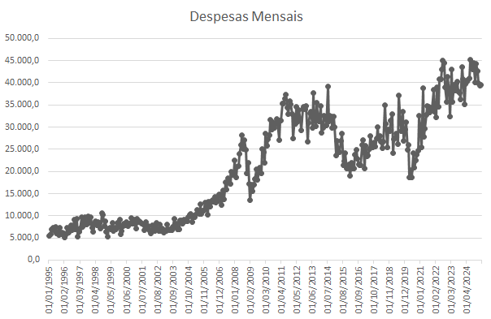
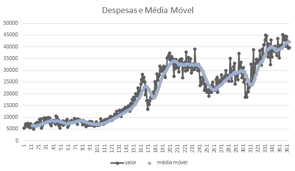

Análise exploratória com dados reais do Banco Central do Brasil
Usei a série histórica Transações Correntes, Mensal, Despesa (código SGS 22703), disponível no site de dados abertos do Banco Central. O arquivo CSV possui duas colunas:
Visualização das despesas mensais:
Na nova coluna média_móvel_12M, utilizei a fórmula:
=MÉDIA.DESLOC(B2;-11;0;12)

=LIN()-1=MÉDIA.DESLOC(B2;-11;0;12)=(B3-B2)/B2=LIN()-1O coeficiente de determinação R² mostra o quanto a variação no valor pode ser explicada pelo tempo. Quanto mais próximo de 1, mais forte a tendência linear.
Apesar de dominar Python e suas bibliotecas (pandas, matplotlib etc.), escolhi o Excel para mostrar domínio de ferramentas corporativas. O resultado foi uma planilha dinâmica, com campos editáveis e análise acessível até para usuários não técnicos.